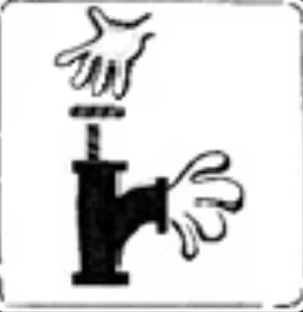
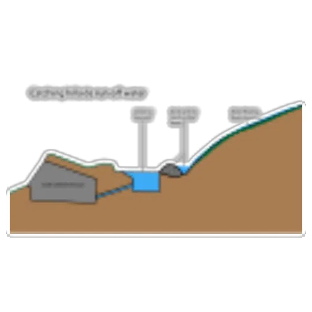

पावसाच्या पाण्याची साठवण (Rainwater harvesting) म्हणजे पुनर्वापरासाठी पावसाचे पाणी जमा करणे.पावसाचे पाणी घराच्या,इमारत छतावरून एका मोठ्या जमिनीखालच्या टाकीमध्ये गोळा करतात व वर्षभर पिण्यासाठी वापरतात. काही ठिकाणी साठवावयाचे पाणी खोल खड्डा (विहीर, शाफ्ट किंवा बोअरहोल), पाझर असलेल्या जलाशयांत साठवतात. पाणी जाळी किंवा इतर साधनांसह दंव किंवा धुक्यातूनही गोळा केले जाते. हे माणसासाठी अपेय असलेले पाणी गार्डन, पशुधन, सिंचन वा घरगुती वापरासाठी योग्य असते. कापणीचे पाणी, पिण्याचे पाणी हे दीर्घ मुदतीची साठवण करून वापरले जाऊ शकते.
फायदे:
- जलपुनर्भरण योग्य प्रकारे जलसंधारण आणि नियोजन केल्यास, पाणीपुरवठ्यासाठी बाहेरील स्रोतांवर कमी प्रमाणात अवलंबून राहावे लागते.
- जलसंधारणामुळे जमिनीखालील पाण्याची पातळी वाढते.
- जमिनीखालील पाण्याची पातळी वाढल्यामुळे, पाणी वर खेचण्यासाठी लागणाऱ्या विजेच्या वापरात बचत होते
- जमिनीखालील पाण्याच्या प्रदूषणाचे सौम्यीकरण झाल्यामुळे, पाण्याचा दर्जादेखील सुधारतो.
- जमिनीची धूप रोखण्यास काही प्रमाणात मदत होते.
- गच्चीवरील पाण्याच्या संधारणाच्या पद्धती तुलनेने अवलंबण्यास सोप्या आहेत.
- जलसंधारणाच्या बऱ्याच पद्धती या घरबांधण्यासाठी, वापरण्यासाठी आणि निगा राखण्यासाठी अतिशय सोप्या आहेत.
- समुद्री प्रदेशाजवळील भागांमध्ये, जमिनीखालील खाऱ्या व क्षारयुक्त पाण्याची तीव्रता कमी करण्यासाठी जलसंधारण महत्त्वाचे काम करते.
- निसर्गात स्वच्छ आणि गोड्या पाण्याची कमतरता असल्यामुळे अधिक गोड्या पाण्याचा पुरवठा करणाऱ्या पावसाच्या पाण्याचे नियोजन आवश्यक आहे.
- कमी खर्च.
- पाण्याचे बिल कमी करण्यास मदत करते.
- पाण्याची मागणी कमी करते.
- आयात केलेल्या पाण्याची गरज कमी करते.
- पाणी आणि ऊर्जा संवर्धनाला प्रोत्साहन देते.
- भूजलाची गुणवत्ता आणि प्रमाण सुधारते.
- लँडस्केप सिंचनासाठी गाळण्याची प्रणालीची आवश्यकता नाही.
- हे तंत्रज्ञान तुलनेने सोपे आहे, स्थापित करणे आणि चालवणे सोपे आहे.
- हे मातीची धूप, वादळी पाण्याचा प्रवाह, पूर आणि खते, कीटकनाशके, धातू आणि इतर गाळामुळे पृष्ठभागावरील पाण्याचे प्रदूषण कमी करते.
- हे रसायने, विरघळलेले क्षार आणि सर्व खनिजांपासून मुक्त असलेल्या लँडस्केप सिंचनासाठी पाण्याचा एक उत्कृष्ट स्रोत आहे.